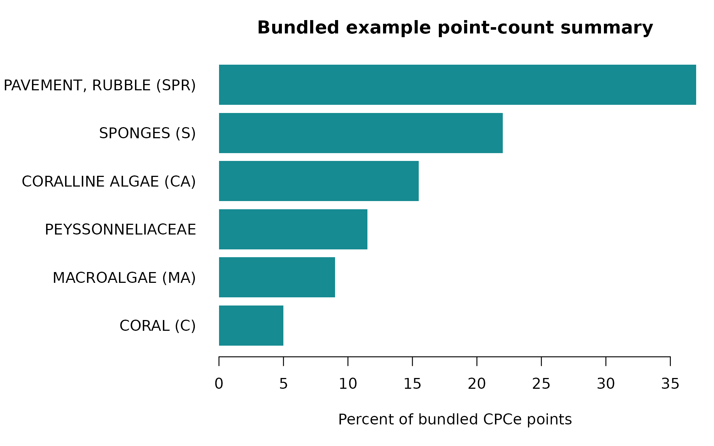

Get started with pointcoral
pointcoral-workflow.Rmdpointcoral turns local Coral Point Count with Excel
extensions (CPCe) annotations into reviewable point tables, point-count
cover summaries, quality-control (QC) overlays, and
machine-learning-ready data. This guide uses only small files installed
with the package and writes temporary outputs.
The workflow is appropriate for analysts who have CPCe point annotations and the corresponding photoquadrat images. It does not replace project sampling design, taxonomic review, or image-quality assessment.
Understand the bundled example
The example contains two .cpc files and two JPEGs. Each
CPCe file has 100 annotated points. A separate example crosswalk maps
the observed short codes to full labels and broader benthic
categories.
example_dir <- system.file("extdata", package = "pointcoral")
basename(list.files(example_dir))
#> [1] "H_211_E_U-1.cpc"
#> [2] "H_211_E_U-1.jpg"
#> [3] "HIW_158_W_U-1.cpc"
#> [4] "HIW_158_W_U-1.jpg"
#> [5] "pointcoral_example_cpce_output_raw_tabs.xlsx"
#> [6] "pointcoral_example_crosswalk.csv"The sample files are for software demonstration. Their two images do not represent a reef, site, monitoring period, or population by themselves.
1. Import and match images
read_cpce_folder() imports recognizable point files.
With image_root, it also matches image basenames and reads
image dimensions.
points_raw <- read_cpce_folder(
path = example_dir,
image_root = example_dir,
recursive = FALSE
)
data.frame(
points = nrow(points_raw),
images = length(unique(points_raw$image_id)),
raw_labels = length(unique(points_raw$raw_label))
)
#> points images raw_labels
#> 1 200 2 15
knitr::kable(
head(points_raw[c(
"image_id", "point_id", "cpce_x", "cpce_y", "x_px", "y_px",
"raw_label"
)], 6),
caption = "Imported CPCe points with original and image-pixel coordinates."
)| image_id | point_id | cpce_x | cpce_y | x_px | y_px | raw_label |
|---|---|---|---|---|---|---|
| HIW_158_W_U-1 | 1 | 982 | 567 | 19 | 11 | SPO |
| HIW_158_W_U-1 | 2 | 351 | 5422 | 7 | 107 | S |
| HIW_158_W_U-1 | 3 | 1336 | 8356 | 26 | 165 | CALG |
| HIW_158_W_U-1 | 4 | 3497 | 10228 | 69 | 202 | SPO |
| HIW_158_W_U-1 | 5 | 1292 | 12293 | 26 | 243 | SPO |
| HIW_158_W_U-1 | 6 | 2156 | 15436 | 43 | 305 | SPO |
Coordinate requirement
cpce_x and cpce_y retain the CPCe
coordinate space. x_px and y_px are integer
pixel coordinates in the matched image. The tested .cpc
parser uses the maximum region-of-interest coordinates as the CPCe width
and height, then scales each axis proportionally to image width and
height.
This conversion assumes that the CPCe annotation display and stored image have the same orientation and uncropped spatial extent. Rotated, mirrored, cropped, or otherwise transformed images need project-specific handling. Always inspect an overlay before analysis or training export.
2. Validate the imported points
validate_points(points_raw)
#> # A tibble: 1 × 4
#> check severity n details
#> <chr> <chr> <int> <chr>
#> 1 ok info 0 No validation issues detectedValidation detects missing required fields, labels and coordinates,
duplicate point IDs within images, out-of-bounds pixel coordinates,
missing files, and missing image dimensions. An ok result
means those checks passed; it is not a taxonomic or sampling-design
validation.
3. Summarize the original CPCe labels
A crosswalk is optional. The raw CPCe codes can be summarized immediately.
raw_cover <- summarize_images(points_raw, class_col = "raw_label")
knitr::kable(
head(raw_cover, 8),
digits = 1,
caption = "First image-level point-count summaries using original CPCe labels."
)| site | transect | image_id | raw_label | n | n_points | percent |
|---|---|---|---|---|---|---|
| Hole in the Wall | HIW_158_W_U-1 | HIW_158_W_U-1 | AA | 4 | 100 | 4 |
| Hole in the Wall | HIW_158_W_U-1 | HIW_158_W_U-1 | CALG | 18 | 100 | 18 |
| Hole in the Wall | HIW_158_W_U-1 | HIW_158_W_U-1 | LOBO | 8 | 100 | 8 |
| Hole in the Wall | HIW_158_W_U-1 | HIW_158_W_U-1 | P | 2 | 100 | 2 |
| Hole in the Wall | HIW_158_W_U-1 | HIW_158_W_U-1 | PEFL | 7 | 100 | 7 |
| Hole in the Wall | HIW_158_W_U-1 | HIW_158_W_U-1 | PEYS | 9 | 100 | 9 |
| Hole in the Wall | HIW_158_W_U-1 | HIW_158_W_U-1 | S | 21 | 100 | 21 |
| Hole in the Wall | HIW_158_W_U-1 | HIW_158_W_U-1 | SPO | 27 | 100 | 27 |
Within each image, percent is
100 * n / n_points. It is the proportion of retained
sampled points assigned to a label. Whether that proportion supports a
site- or program-level cover estimate depends on the project’s image
selection, point placement, replication, exclusions, weights, and
aggregation plan.
4. Review and apply a project crosswalk
The bundled crosswalk demonstrates the expected structure. It is not a universal label set. Review raw codes, species/type names, broad categories, inclusion flags, and class IDs against the CPCe codefile and project protocol.
crosswalk_path <- file.path(
example_dir, "pointcoral_example_crosswalk.csv"
)
crosswalk <- read_label_crosswalk(crosswalk_path)
knitr::kable(
head(crosswalk[c(
"raw_code", "full_label", "major_category", "class_id"
)], 8),
caption = "Example crosswalk fields."
)| raw_code | full_label | major_category | class_id |
|---|---|---|---|
| AC | Acropora cervicornis | CORAL (C) | 0 |
| AP | Acropora prolifera | CORAL (C) | 0 |
| APR | Acropora prolifera | CORAL (C) | 0 |
| AA | Agaricia | CORAL (C) | 0 |
| AF | Agaricia fragilis | CORAL (C) | 0 |
| AG | Agaricia grahamae | CORAL (C) | 0 |
| AH | Undaria humili | CORAL (C) | 0 |
| AT | Agaricia tenuifolia | CORAL (C) | 0 |
crosswalk_report <- check_crosswalk(points_raw, crosswalk)
knitr::kable(
as.data.frame(table(crosswalk_report$issue_type)),
col.names = c("Issue", "Rows"),
caption = "Crosswalk checks for the two bundled images."
)| Issue | Rows |
|---|---|
| unused_in_points | 101 |
Mappings unused by these two images are informational. Missing mappings in the point data, duplicate keys, or missing IDs require review before standardizing.
points_clean <- standardize_labels(
points_raw,
crosswalk,
unknown_action = "warn"
)
knitr::kable(
head(points_clean[c(
"raw_label", "full_label", "major_category", "ml_class", "class_id"
)], 8),
caption = "Original labels retained beside standardized fields."
)| raw_label | full_label | major_category | ml_class | class_id |
|---|---|---|---|---|
| SPO | Sponge | SPONGES (S) | SPONGES (S) | 2 |
| S | Sand | SAND, PAVEMENT, RUBBLE (SPR) | SAND, PAVEMENT, RUBBLE (SPR) | 8 |
| CALG | Coralline algae | CORALLINE ALGAE (CA) | CORALLINE ALGAE (CA) | 7 |
| SPO | Sponge | SPONGES (S) | SPONGES (S) | 2 |
| SPO | Sponge | SPONGES (S) | SPONGES (S) | 2 |
| SPO | Sponge | SPONGES (S) | SPONGES (S) | 2 |
| PEYS | Peyssonnelia | PEYSSONNELIACEAE | PEYSSONNELIACEAE | 5 |
| CALG | Coralline algae | CORALLINE ALGAE (CA) | CORALLINE ALGAE (CA) | 7 |
Unmapped labels are never silently discarded. Use
unknown_action = "error" for a strict release workflow.
5. Calculate standardized cover summaries
major_cover <- summarize_images(
points_clean,
class_col = "major_category"
)
knitr::kable(
major_cover,
digits = 1,
caption = "Major-category point-count cover by bundled image."
)| site | transect | image_id | major_category | n | n_points | percent |
|---|---|---|---|---|---|---|
| Hole in the Wall | HIW_158_W_U-1 | HIW_158_W_U-1 | CORAL (C) | 5 | 100 | 5 |
| Hole in the Wall | HIW_158_W_U-1 | HIW_158_W_U-1 | CORALLINE ALGAE (CA) | 18 | 100 | 18 |
| Hole in the Wall | HIW_158_W_U-1 | HIW_158_W_U-1 | MACROALGAE (MA) | 11 | 100 | 11 |
| Hole in the Wall | HIW_158_W_U-1 | HIW_158_W_U-1 | PEYSSONNELIACEAE | 16 | 100 | 16 |
| Hole in the Wall | HIW_158_W_U-1 | HIW_158_W_U-1 | SAND, PAVEMENT, RUBBLE (SPR) | 23 | 100 | 23 |
| Hole in the Wall | HIW_158_W_U-1 | HIW_158_W_U-1 | SPONGES (S) | 27 | 100 | 27 |
| Hoyo Terrace | H_211_E_U-1 | H_211_E_U-1 | CORAL (C) | 5 | 100 | 5 |
| Hoyo Terrace | H_211_E_U-1 | H_211_E_U-1 | CORALLINE ALGAE (CA) | 13 | 100 | 13 |
| Hoyo Terrace | H_211_E_U-1 | H_211_E_U-1 | MACROALGAE (MA) | 7 | 100 | 7 |
| Hoyo Terrace | H_211_E_U-1 | H_211_E_U-1 | PEYSSONNELIACEAE | 7 | 100 | 7 |
| Hoyo Terrace | H_211_E_U-1 | H_211_E_U-1 | SAND, PAVEMENT, RUBBLE (SPR) | 51 | 100 | 51 |
| Hoyo Terrace | H_211_E_U-1 | H_211_E_U-1 | SPONGES (S) | 17 | 100 | 17 |
overall_cover <- summarize_points(
points_clean,
by = character(),
class_col = "major_category"
)
overall_cover <- overall_cover[order(overall_cover$percent), ]
old_par <- par(mar = c(5, 12, 3, 1))
barplot(
overall_cover$percent,
names.arg = overall_cover$major_category,
horiz = TRUE,
las = 1,
col = "#168B91",
border = NA,
xlab = "Percent of bundled CPCe points",
main = "Bundled example point-count summary"
)
par(old_par)Do not treat this pooled demonstration as a design-based reef estimate. Choose the grouping and any subsequent aggregation to match the survey design.
6. Create and inspect a QC overlay
The example below writes one overlay to a temporary directory and returns a manifest. Open the file in an image viewer during a real project.
qc_dir <- tempfile("pointcoral-qc-")
qc_manifest <- write_qc_overlays(
points_clean[points_clean$image_id == unique(points_clean$image_id)[1], ],
image_root = example_dir,
out_dir = qc_dir,
label_col = "raw_label"
)
knitr::kable(
transform(qc_manifest, overlay_file = basename(overlay_path))[
c("image_id", "n_points", "overlay_file")
],
caption = "QC overlay written from installed sample data."
)| image_id | n_points | overlay_file |
|---|---|---|
| HIW_158_W_U-1 | 100 | HIW_158_W_U-1_qc.jpg |
Review edge points, known structures, image orientation, and label placement. An overlay can reveal a coordinate mismatch but cannot prove that every label is ecologically correct.
7. Prepare leakage-aware ML point labels
Split at the highest level needed to keep related observations together. Splitting individual points from the same image across training and test sets would leak nearly identical image context.
points_split <- split_ml_points(
points_clean,
split_by = "image",
train = 0.5,
val = 0,
test = 0.5,
seed = 10
)
ml_points <- make_ml_points(points_split, class_col = "ml_class")
knitr::kable(
as.data.frame(table(ml_points$split)),
col.names = c("Split", "Points"),
caption = "Deterministic image-level split for two bundled images."
)| Split | Points |
|---|---|
| test | 100 |
| train | 100 |
unique(ml_points[c("image_id", "split")])
#> # A tibble: 2 × 2
#> image_id split
#> <chr> <chr>
#> 1 HIW_158_W_U-1 train
#> 2 H_211_E_U-1 testFor repeated transects, sites, or dates, image-level separation may still be too weak. Choose the grouping that reflects the intended prediction task.
8. Understand patches and sparse masks
Point-centered patches inherit the CPCe point label but can include mixed benthic content. Patch size is measured in pixels and should be justified for the image resolution and task.
Sparse masks write a class ID only inside a disk around each point.
radius is in pixels. All other pixels default to
ignore_index = 255; they are unknown, not background. Class
IDs therefore must not use the ignore value and should fit the 0–254
range used by the current PNG encoding.
mask_dir <- tempfile("pointcoral-mask-")
mask_manifest <- make_sparse_masks(
points_split[1:5, ],
image_root = example_dir,
out_dir = mask_dir,
radius = 2,
class_col = "ml_class"
)
knitr::kable(
transform(mask_manifest, mask_file = basename(mask_path))[
c("image_id", "image_width", "image_height", "n_points", "mask_file")
],
caption = "Sparse weak-label mask manifest."
)| image_id | image_width | image_height | n_points | mask_file |
|---|---|---|---|---|
| HIW_158_W_U-1 | 900 | 566 | 5 | HIW_158_W_U-1_mask.png |
These masks are weak supervision. They are not dense human-verified segmentation labels and do not imply that nearby unlabeled pixels share or do not share the point class.
9. Run the complete writer
The wrapper can reproduce the same stages and write an organized dataset. The example disables heavier image outputs to keep the vignette fast.
output_dir <- tempfile("pointcoral-workflow-")
result <- run_pointcoral(
cpce_dir = example_dir,
image_root = example_dir,
out_dir = output_dir,
crosswalk_path = crosswalk_path,
recursive = FALSE,
make_patches = FALSE,
make_masks = FALSE,
make_qc = FALSE
)
data.frame(
class_column = result$class_col,
point_rows = nrow(result$points_clean),
ml_rows = nrow(result$ml_points),
validation = paste(result$validation_report$check, collapse = ", ")
)
#> class_column point_rows ml_rows validation
#> 1 ml_class 200 200 okBefore using project results
- Confirm that the CPCe file variant is parsed correctly.
- Resolve duplicate image basenames and stale embedded paths.
- Verify image orientation, extent, dimensions, and point overlays.
- Review every observed raw label and the project crosswalk.
- Define exclusions, grouping, replication, and percent-cover aggregation from the sampling design.
- Define leakage boundaries and an external evaluation plan for ML work.
- Record package version, crosswalk version, parameters, and source files.
Continue with the worked examples, coordinate and QC guide, ML outputs guide, and interpretation and limitations.